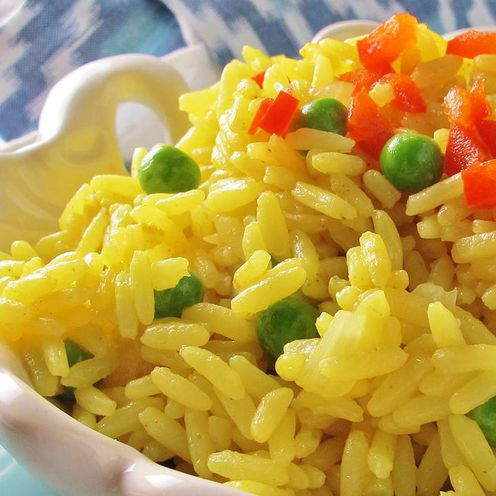

Arroz Amarillo al estilo cubano

Descripcion
Arroz Amarillo al estilo cubano is a vibrant and flavorful yellow rice dish made with saffron, garlic, onions, and bell peppers, often served as a side dish to complement Cuban meals.
Ingredients
- 1 cup long-grain white rice
- 2 cups chicken broth
- 1/2 tsp saffron threads
- 1 onion, chopped
- 1 bell pepper, chopped
- 2 cloves garlic, minced
- 2 tbsp olive oil
- Salt to taste
Instructions
- In a large skillet, heat the olive oil over medium heat.
- Add the chopped onion, bell pepper, and minced garlic. Sauté until the vegetables are softened.
- Stir in the rice and cook for 2-3 minutes, allowing it to toast slightly.
- In a separate saucepan, heat the chicken broth and saffron threads until the broth is hot and the saffron has infused its color and flavor.
- Pour the saffron-infused broth over the rice mixture. Stir well to combine.
- Reduce the heat to low, cover the skillet, and simmer for 18-20 minutes, or until the rice is cooked and the liquid is absorbed.
- Fluff the rice with a fork and season with salt to taste. Serve hot as a side dish to your favorite Cuban meals.
Home